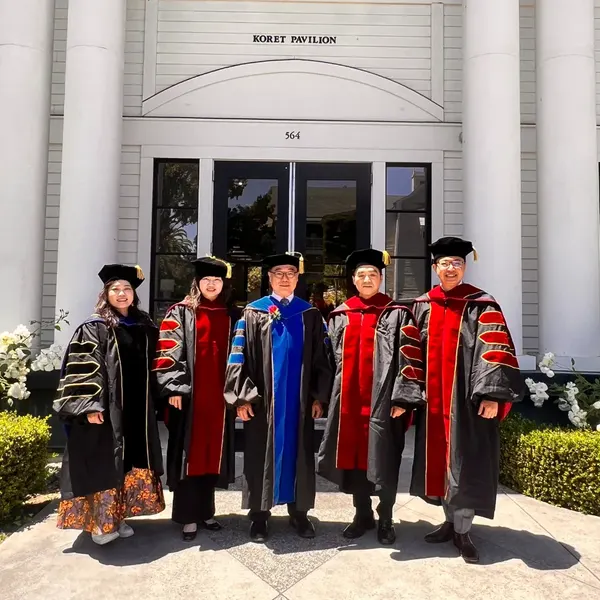
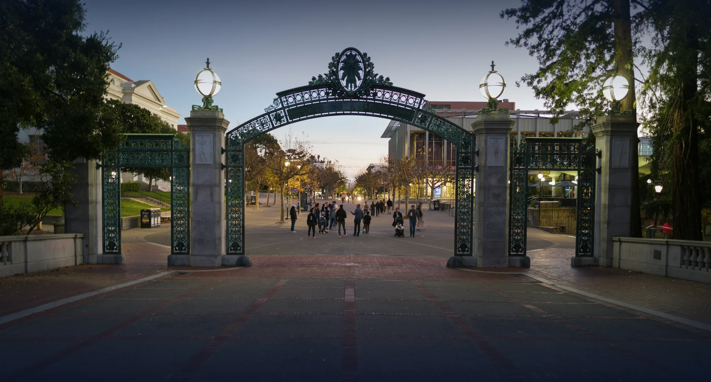
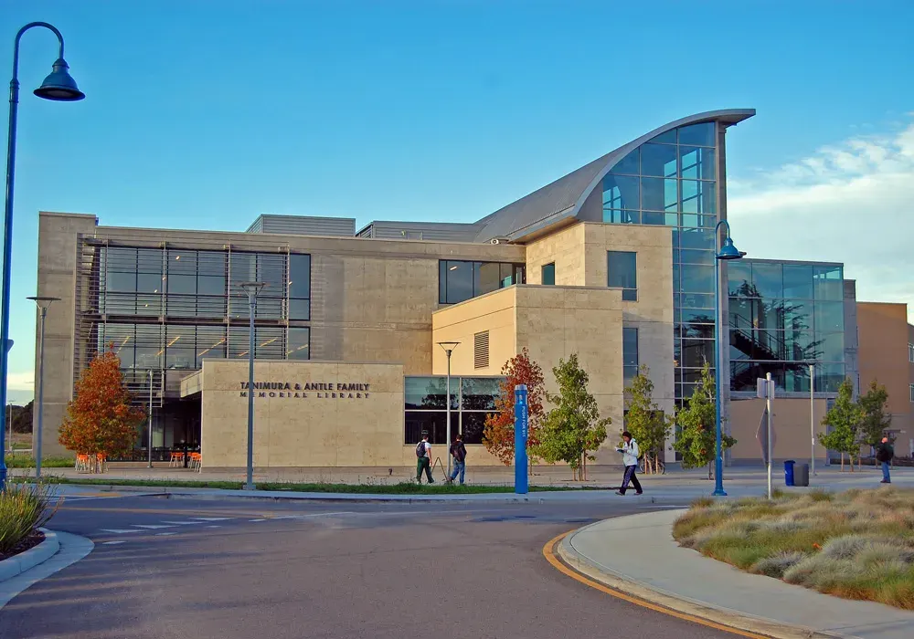
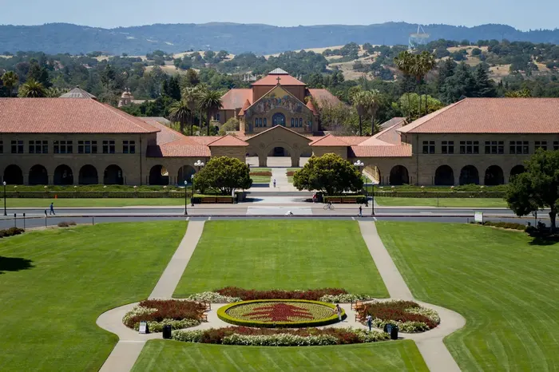
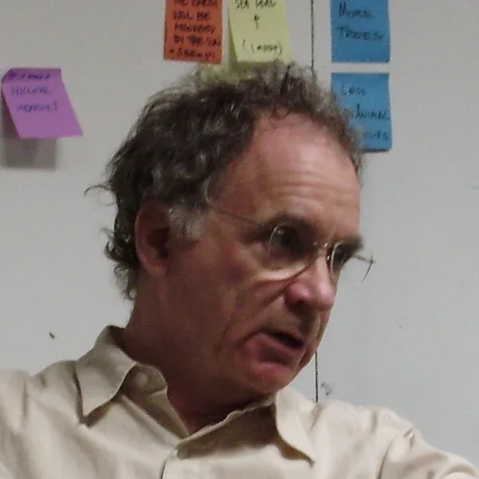

01
課程
創新研究與創業
授課
Dr. Eric Tao（CSU Monterey Bay）
你會帶回公司的
用 AI 工具做研究與數據決策
創新企業與卓越人才獎學金：限 11 月底前送件
史丹佛・柏克萊・加州州立大學｜2027 全球企業家 AI 創新與管理研究計畫
面對 2027 全球變局……不是被浪吞沒，就是成為造浪者。
8 個月，一次獲得史丹佛、柏克萊、加州州大三校博士後暨訪問學者證書。不必再花好幾年走傳統學制。AI 時代的知識更新得太快，學習的速度跟不上，學到的就已經過時。
美國院士親自帶你掌握矽谷菁英的「高效學習」與「資源連結」，讓你的公司在 AI 浪潮中領先一步。
這不是一般的線上課程。
這是專為亞洲企業家打造的《博士後暨訪問學者》進修計畫，整合美國三大名校資源，打破傳統學制的限制，給你一條直通矽谷的快速通道。
如果你正面臨這些處境：
你的底蘊，還跟得上你的野心嗎？
碩士、EMBA 人人都有；三校教授親自指導、以你的公司為題完成的研究，才是別人複製不了的資歷。


一起上課、一起做專題，人脈在共事中建立，不靠應酬。
從課堂到一對一指導，直接對話。
結業後持續連結，專題可在矽谷研究院全球學術論壇發表。
AI 時代，學習速度就是競爭力。每月一次、週日上午直播，學到的當月就能帶回公司用。
2027 年 3 月開學，10 月結業。每月 1 次，台灣時間週日上午，每次 3 小時。
研究聚焦經營決策與組織應用，題目直接結合你的公司。

開學，選定研究方向
8 堂三校與矽谷師資課程，預約教授一對一指導
選配赴美 7 天 6 夜，校園課程、矽谷參訪與結業典禮
專題發表，取得三校博士後暨訪問學者證書
01
課程
授課
Dr. Eric Tao（CSU Monterey Bay）
你會帶回公司的
用 AI 工具做研究與數據決策
02
課程
授課
Bill Reichert（Stanford & UC Berkeley）
你會帶回公司的
AI 導入路線圖與人機協作的組織設計
03
課程
授課
Dr. Christina Zhang（CSU Monterey Bay）
你會帶回公司的
新事業的融資邏輯
04
課程
授課
Dr. Ling Zong（矽谷 IBM）
你會帶回公司的
生成式 AI、AI Agent、算力與晶片的趨勢判讀
05
課程
授課
Dr. Barry Katz（Stanford）
你會帶回公司的
用設計思維重塑產品與商業模式
06
課程
授課
Dr. Patricia (Patty) Wiggin（矽谷）
你會帶回公司的
AI 驅動的行銷與客戶洞察
07
課程
授課
John Kelley（Stanford）
你會帶回公司的
AI 法規、資料隱私與企業風險控管
08
課程
授課
Dr. Martha Olney（UC Berkeley）
你會帶回公司的
AI 帶動的供應鏈與產業版圖重組
矽谷核心，校友創辦 Google、Yahoo、惠普、Nike。

舊金山灣區，與史丹佛同在矽谷創新圈。
本計畫三校之一，負責創新研究與新創融資課程。
與三校合作開設研究中心專案，並邀請矽谷科技企業高層授課。
史丹佛大學 Stanford
史丹佛大學教師、史丹佛醫學院 SPARK 創新計畫顧問，專研 AI 與法律；OnRisk, Inc. 共同創辦人兼 COO。

史丹佛大學 Stanford
史丹佛大學，IDEO 院士（Fellow），帶你把設計思維用在商業模式上。
加州大學柏克萊分校 UC Berkeley
任教於史丹佛與柏克萊。全球 20 億美元創投 Pegasus 合夥人、Garage Technology Ventures 創辦人，曾帶領 2 家公司上市，用投資人的眼光檢視你的事業。
加州大學柏克萊分校 UC Berkeley
柏克萊經濟學教授，榮獲柏克萊傑出教學獎，著有《Macroeconomics as a Second Language》，研究曾於美國國會預算辦公室發表。
加州州立大學蒙特雷灣分校 CSU Monterey Bay
加州州立大學電腦科學及創新終身教授、美國矽谷研究院院長，曾任美國三所大學校長，發表超過 40 篇 AI、大數據相關論文。
加州州立大學蒙特雷灣分校 CSU Monterey Bay
專長新創融資與公司治理。

矽谷科技企業高層
專長新興科技與科技創投。
矽谷科技企業高層
曾任西門子（Siemens）高層、領導跨國團隊，12 年 MBA 教學經驗，專精組織變革與競爭性行銷。
不是走馬看花的參觀，而是帶著你的研究題目，與教授、矽谷高層面對面。


已經第9期
97
家合作企業
36
門專業課程
43
位合作教授
曾報導經濟日報工商時報卓越電子報
一次性獲得 史丹佛 (Stanford)、柏克萊 (Berkeley)、加州州大 (CSU) 三所世界頂尖名校的三校博士後暨訪問學者證書 。
取得「博士後研究員 (Post-doc)」或「訪問學者 (Visiting Scholar)」頭銜，這是高於學位的學術榮譽，直接提升你的行業話語權 。
獨家網路直播班制，8個月完成學程。不需離職、不需長住美國，透過Live直播即可與矽谷大師面對面 。
透過華沃教育的獨家推薦通道，免語言成績、免筆試，華沃教育看重的是你的職業成就與實務經驗 。
「別讓你的名片，停留在過去的榮耀！」
2027的未來十年競爭，不再是比誰更努力，而是比誰站得更高。給自己8個月，這不只是一次進修，這是你下半場職涯的『升維打擊』。
不用羨慕別人的成功
現在，輪到你了！
林嘉宏 Win
華沃教育創辦人
我是Win教授
很高興在這個網頁見到你！
這表示你已經正在為自己的人生或事業找尋新的契機...
我用最快速、簡單方式讓你認識我...
國際教育與商業顧問經驗，擅長數位行銷、商業模式、創新創業
獲聘美國矽谷研究院最年輕華裔院士
台灣最年輕榮獲美國哈佛商業評論拉姆查蘭管理實踐獎得主
台灣唯一榮獲澳洲The CEO Institute機構認證全球CEO
近5年帶領超過百位企業主、高管與專業人士世界各地進修
以《用數位加盟創新商模賦能台灣傳統產業數智化運營》榮獲 2024 拉姆・查蘭管理實踐獎「創新創業實踐獎」（《哈佛商業評論》中文版主辦）
授課與教育事業足跡涵蓋台灣、中國、新加坡、馬來西亞
MBA、EMBA 偏重學科知識，要花好幾年；本計畫重視「學術＋產業實踐」，8 個月、以你的公司為題完成研究。
為企業建立國際公信力，帶來產業趨勢與頂級人脈，研究成果可直接用於公司轉型。
可以。本計畫為企業主、高管與專業人士設計，研究題目直接結合企業營運，教授全程協助。
每月 1 次、週日上午 3 小時，不需離開公司；赴美為選配。
史丹佛、柏克萊教授親自授課與指導。
諮詢時依你的狀況說明。「創新企業與卓越人才獎學金」限 11 月底前送件。
教授與顧問時間有限，請依序預約。國際招生顧問會依你的公司狀況，說明上課方式與獎學金申請。2027 年 3 月開學，獎學金限 11 月底前送件。
立即預約一對一諮詢→來電預約：02-8988-2862